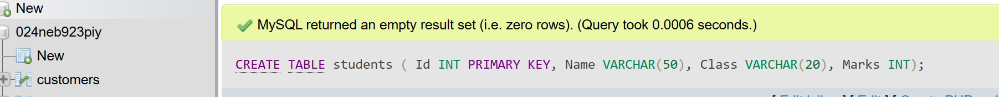
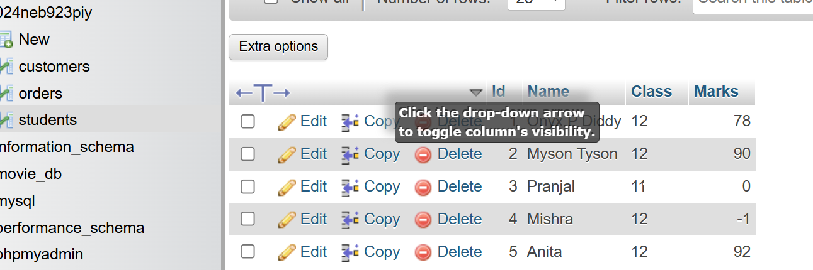
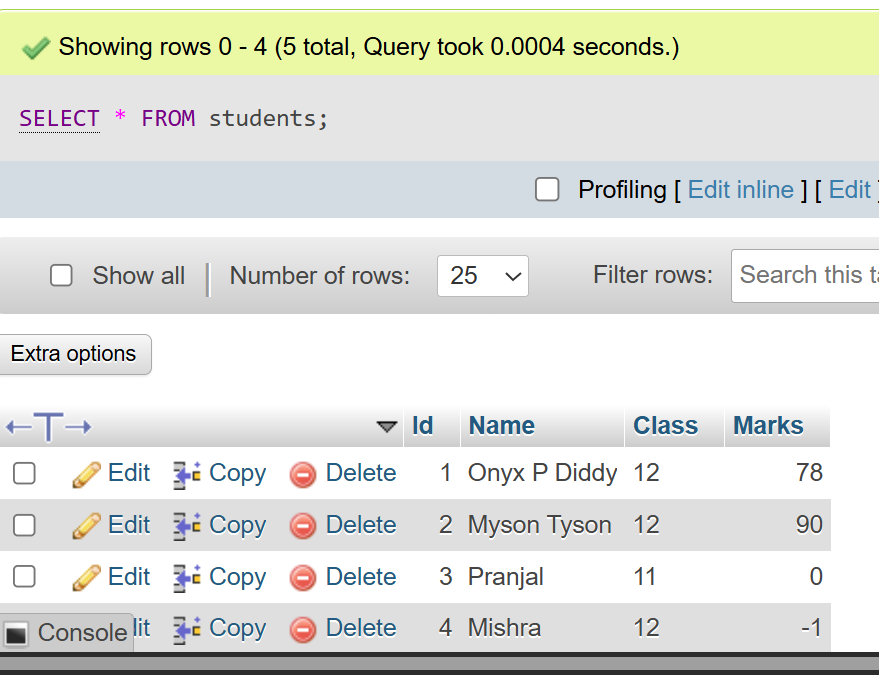
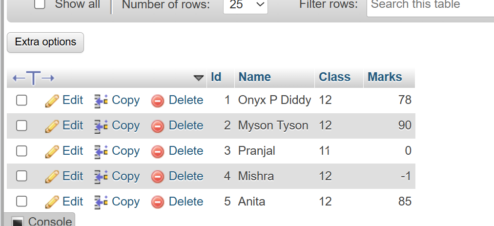
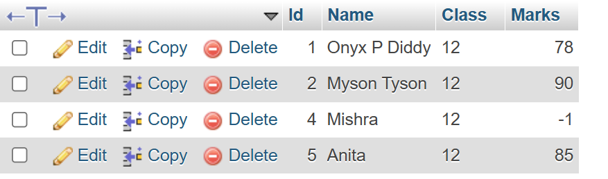

Chapter 1 – Database Management System
A Database Management System (DBMS) is a software solution designed to efficiently manage, organize, and retrieve data in a structured manner. It serves as a critical component in modern computing, enabling organizations to store, manipulate, and secure their data effectively. From small applications to enterprise systems, DBMS plays a vital role in supporting data-driven decision-making and operational efficiency.A DBMS is a system that allows users to create, modify, and query databases while ensuring data integrity, security, and efficient data access. Unlike traditional file systems, DBMS minimizes data redundancy, prevents inconsistencies, and simplifies data management with features like concurrent access and backup mechanisms. It organizes data into tables, views, schemas, and reports, providing a structured approach to data management.
The syllabus of grade 12 is listed below:
| S.N. | Topic | Content wise marks | Working hours |
|---|---|---|---|
| 1 | Database management system | 8 | 12 |
| 2 | Data communication and networking | 9 | 15 |
| 3 | Web Tech – II | 8 | 12 |
| 4 | C Programming II | 8 | 12 |
| 5 | Object oriented programming | 6 | 10 |
| 6 | Software development life cycle | 6 | 10 |
| 7 | Recent Trends in technology | 5 | 9 |
| Total | 50 | 80 | |
Introduction to Data And Information
Data is defined as unstructured information such as text, observations, images, symbols, and descriptions. In other words, data provides no specific function and has no meaning on its own. Similarly, Information refers to processed, organized, and structured data. It gives context for the facts and facilitates decision making. In other words, information is processed data that makes sense to us.
Characteristics of Database Management System
- Data Modelling Tools to create and modify data models, defining the structure and relationships within the database.
- Data Storage and Retrieval: Efficient mechanisms for storing data and executing queries to retrieve it quickly.
- Concurrency Control Ensures multiple users can access the database simultaneously without conflicts..
- Data Integrity and Security Enforces rules to maintain accurate and secure data, including access controls and encryption.
Database Terminologies
Table:A collection of related data organized in rows and columns. Represents an entity or object in a database.
Field:A column in a table. Represents a specific attribute or property of the entity.
Record:A single row in a table representing one complete set of related data (one instance of the entity).
Tuple:Another name for a record in relational database theory. Essentially the same as a record: one row in a table
Object:A real-world entity or concept represented in the database. In object-oriented databases, it can encapsulate data and behavior (attributes + methods).
Keys:Attributes that uniquely identify records or establish relationships between tables.
1. Primary Key:Unique identifier for each record in a table.
2. Foreign Key:Attribute that links one table to another by referring to a primary key.
Advantages and Disadvantages of DMS
Advanatages
- Reduced data redundancy
- Improved data sharing
- Data consistency and integrity
- Data security
- Backup and recovery support
Disadvanatages
- Complexity of DBMS software
- Costly to install and maintain
- Performance overhead for large systems
Types of Database Models
- Hierarchical Model: Data organized in a tree-like structure.
- Network Model: Flexible graph-like structure with many-to-many relationships.
- Relational Model: Data organized in tables with relations defined by keys.
- Entity-Relationship Model: Conceptual design model representing entities and relationships.
Integrity Constraints and Types
- Domain Constraint: Restricts data values for a given attribute.
- Entity Integrity: Primary key must be unique and not null.
- Referential Integrity: Foreign keys must match primary keys or be null.
- Keys: Primary, Candidate, Foreign keys enforcing uniqueness and relationships.
Normalization
Introduction
Normalization is an important process in database design that helps improve the database's efficiency, consistency, and accuracy. It makes it easier to manage and maintain the data and ensures that the database is adaptable to changing business needs.
The primary objective for normalizing the relations is to eliminate the below anomalies. Failure to reduce anomalies results in data redundancy, which may threaten data integrity and cause additional issues as the database increases. Normalization consists of a set of procedures that assist you in developing an effective database structure.
Normal Forms
- 1NF (First Normal Form): Eliminate repeating groups; atomic columns.
- 2NF (Second Normal Form): Remove partial dependency on a composite key.
- 3NF (Third Normal Form): Remove transitive dependency.
Advantages
- Reduces data redundancy
- Improves data integrity
- Makes database design more flexible
Disadvantages
- Normalization may require complex joins
- Possible performance impact
Centralized and Distributed Database
Introduction
Centralized: AA centralized database stores all data in a single location, usually on one server or mainframe. Users access the database from that one central place. It’s easier to manage and maintain but can become a bottleneck or a single point of failure if the server goes down.
Distributed: A distributed database stores data across multiple locations or servers that are connected via a network. Each site manages its own data but they all work together as one system. This improves reliability, availability, and can handle more users or larger data volumes.
Advantages
- Centralized: Easier management, consistency.
- Distributed: Improved reliability, scalability, and performance.
Disadvantages
- Centralized: Single point of failure, scalability limits.
- Distributed: Complexity in management, data consistency challenges.
Comparison
| Basis of Comparison | Centralized Database | Distributed Database |
|---|---|---|
| Definition | It is a database that is stored, located as well as maintained at a single location only. | It is a database that consists of multiple databases which are connected with each other and are spread across different physical locations. |
| Access Time | The data access time in the case of multiple users is more in a centralized database. | The data access time in the case of multiple users is less in a distributed database. |
| Management of Data | The management, modification, and backup of this database are easier as the entire data is present at the same location. | The management, modification, and backup of this database are very difficult as it is spread across different physical locations. |
| View | This database provides a uniform and complete view to the user. | Since it is spread across different locations, thus it is difficult to provide a uniform view to the user. |
| Data Consistency | This database has more data consistency in comparison to distributed database. | This database may have some data replications, thus data consistency is less. |
| Failure | The users cannot access the database in case of database failure occurs. | In a distributed database, if one database fails users have access to other databases. |
| Cost | A centralized database is less costly. | This database is very expensive. |
| Maintenance | Ease of maintenance because the whole of the data and information is available at a single location and thus, easy to reach and access. | It is difficult to maintain because of the distribution of data and information at varied places. So, there is a need to check for data redundancy issues and how to maintain data consistency. |
Database Security
Introduction
Data security in a DBMS ensures that data is protected from unauthorized access, misuse, or loss. It involves authentication, authorization, access control, encryption, and regular backups. These measures help maintain the confidentiality, integrity, and availability of data while preventing threats like SQL injection and unauthorized modifications.
Challenges
- Unauthorized access
- Data breaches and leaks
- Backup and recovery vulnerabilities
- Maintaining data integrity
Security Measures
- Authentication and authorization
- Encryption of data
- Audit trails and monitoring
- Regular backups
Roles of DBA (Database Administrator)
- Database design and implementation
- Performance tuning
- Security administration
- Backup and recovery management
- Monitoring and troubleshooting
Practical Topics: DDL and DML Languages
DDL (Data Definition Language): Commands to define or alter database structures (CREATE, ALTER, DROP).
DML (Data Manipulation Language): Commands to manipulate data (SELECT, INSERT, UPDATE, DELETE).
SQL Data Types
- CHAR: Fixed-length character string.
- VARCHAR: Variable-length character string.
- BINARY: Fixed-length binary data.
- VARBINARY: Variable-length binary data.
- TINYBLOB: Very small binary large object.
- TINYTEXT: Very small text data.
- TEXT: Large text data.
- LONGTEXT: Very large text data.
- ENUM: Enumeration, a list of possible values.
- BIT: Bit field type.
- TINYINT: Small integer.
- BOOLEAN: True or false value.
- INTEGER: Standard integer.
- FLOAT: Floating-point number.
- DOUBLE: Double precision floating-point number.
- DECIMAL: Fixed-point number for exact precision.
- DATE: Date value (year, month, day).
- DATETIME: Date and time value.
Some past papers and questions:
1. What is Database and DBMS? List out the advantages and disadvantages of DBMS.
Ans: A Database is a structured collection of data that can be stored in both physical and digital form for easy and simple access and management. For eg: A phonebook is an example of physical database and an online banking system can be example of digital database. A Database Management System (DBMS) is software that manages digital databases, providing users and applications an interface to interact with data efficiently.
Advantages of DBMS are reduced data redundancy(data isnt repeated), improved data integrity i.e. it ensures that data is recorded exactly as intended and remains unchanged and uncorrupted during storage, transfer, and retrieval, enhanced data security, efficient data access, support for backup and recovery, and concurrent user access i.e. multiple users can utilize the database without interfearing with eachother.
It's Disadvantages are increased system complexity, high cost, slower compared to simple file systems due to advanced features such as data integrity, security and querying , and potential security vulnerabilities if not managed properly.
Differentiate between file processing system and DBMS. Give at least four points.
Ans:The difference between file system and DBMS are as follows:
| Basis | File System | DBMS |
|---|---|---|
| Structure | The file system is a way of arranging the files in a storage medium within a computer. | DBMS is software for managing the database. |
| Data Redundancy | Redundant data can be present in a file system. | In DBMS there is no redundant data. |
| Backup and Recovery | It doesn't provide inbuilt mechanism for backup and recovery of data if it is lost. | It provides in-house tools for backup and recovery of data even if it is lost. |
| Query Processing | There is no efficient query processing in the file system. | Efficient query processing is there in DBMS. |
| Consistency | There is less data consistency in the file system. | There is more data consistency because of the process of normalization. |
| Complexity | It is less complex as compared to DBMS. | It has more complexity in handling as compared to the file system. |
| Security Constraints | File systems provide less security in comparison to DBMS. | DBMS has more security mechanisms as compared to file systems. |
Explain the different models of DBMS with advantages and disadvantages.
Ans: The different models of DBMS with advantages and disadvantages are:
| DBMS Model | Advantages | Disadvantages |
|---|---|---|
| Hierarchical Model Data organized in a tree-like structure with parent-child relationships. |
- Simple and efficient for hierarchical data. - Fast access when relationships are simple. |
- Rigid structure, hard to modify. - Redundancy when relationships are not strictly hierarchical. |
| Network Model Uses records and sets to handle many-to-many relationships. |
- Handles complex relationships well. - More flexible than hierarchical model. |
- Difficult to design and maintain. - Requires knowledge of the physical structure. |
| Relational Model Organizes data in tables using rows and columns with keys. |
- Easy to use and understand. - High data integrity. - Supports powerful SQL queries. |
- Slower with large, complex joins. - Requires normalization to reduce redundancy. |
| Entity-Relationship (ER) Model Graphical design model showing entities and relationships. |
- Useful for database design. - Provides clear data visualization. |
- Needs conversion into relational schema for actual use. |
What is a relational database? How is it different from other database models?
Ans: A Relational Database is a type of database that stores data in tables (called relations) consisting of rows and columns. Each table represents an entity (like Customers, Orders, Products), and each row is a record with unique data. Tables can be related to each other through keys, typically using a primary key and foreign keys.
Key features of relational databases:
- Data organized in tables with rows and columns.
- Relationships between tables via keys.
- Uses SQL (Structured Query Language) for querying and managing data.
- Supports data integrity and avoids redundancy.
Other common database models include:
- Hierarchical Model: Data is organized in a tree-like structure with parent-child relationships.
- Network Model: Similar to hierarchical but allows many-to-many relationships through graph structures.
- Document Database (NoSQL): Stores data as documents (usually JSON or XML), good for unstructured or semi-structured data.
- Key-Value Store (NoSQL): Stores data as simple key-value pairs, suitable for caching and fast lookups.
Differences of relational databases:
- Structured and tabular: unlike NoSQL models that may be schema-less or document-based.
- Strict schema: Relational databases enforce a fixed schema, ensuring data types and integrity.
- ACID compliance: ensures reliable transactions with Atomicity, Consistency, Isolation, and Durability.
- Complex querying: SQL allows complex joins and queries, harder in some NoSQL models.
What is data redundancy? How does DBMS help in reducing it?
Ans: Data redundancy occurs when identical data is unnecessarily duplicated within a database or storage system. This repetition not only wastes valuable storage space but also creates challenges in data management. For instance, if customer information or product details are stored in multiple tables or files, any update made in one location might not be reflected in others, leading to inconsistency and unreliable information. Such duplication increases the complexity of maintaining data accuracy and can result in errors during data retrieval or reporting.
A Database Management System (DBMS) plays a crucial role in minimizing data redundancy by providing a centralized framework to store and manage data efficiently. Using techniques such as normalization, a DBMS organizes data into well-structured tables that reduce duplication by storing each piece of information only once. It establishes relationships between tables through keys, enabling data sharing without the need to replicate it. Furthermore, the DBMS enforces data integrity and consistency by controlling how data is accessed and updated, ensuring that all changes are reflected uniformly across the database. This centralized control not only conserves storage resources but also simplifies database maintenance and improves the reliability of data.
Write differentiate between centralized and distributed database systems.
Ans:The difference between file system and DBMS are as follows:
| Basis of Comparison | Centralized Database | Distributed Database |
|---|---|---|
| Definition | It is a database that is stored, located as well as maintained at a single location only. | It is a database that consists of multiple databases which are connected with each other and are spread across different physical locations. |
| Access Time | The data access time in the case of multiple users is more in a centralized database. | The data access time in the case of multiple users is less in a distributed database. |
| Management of Data | The management, modification, and backup of this database are easier as the entire data is present at the same location. | The management, modification, and backup of this database are very difficult as it is spread across different physical locations. |
| View | This database provides a uniform and complete view to the user. | Since it is spread across different locations, thus it is difficult to provide a uniform view to the user. |
| Data Consistency | This database has more data consistency in comparison to distributed database. | This database may have some data replications, thus data consistency is less. |
| Failure | The users cannot access the database in case of database failure occurs. | In a distributed database, if one database fails users have access to other databases. |
| Cost | A centralized database is less costly. | This database is very expensive. |
| Maintenance | Ease of maintenance because the whole of the data and information is available at a single location and thus, easy to reach and access. | It is difficult to maintain because of the distribution of data and information at varied places. So, there is a need to check for data redundancy issues and how to maintain data consistency. |
Define normalization. Explain 1NF, 2NF and 3NF with suitable examples. Explain the normalization process with examples.
Ans: Normal Forms in DBMS are a set of guidelines or rules used during database design to eliminate redundancy and dependency by organizing data into well-structured tables. The process that leads to these forms is called Normalization, and it ensures that data is stored in a logical and efficient manner. Normal Forms help avoid problems like insertion, update, and deletion anomalies by gradually refining the data structure across stages — namely First Normal Form (1NF), Second Normal Form (2NF), and Third Normal Form (3NF). Each normal form builds on the previous one by addressing specific types of redundancy or dependency issues. The aim is to make sure that each data item is stored in only one place, attributes are functionally dependent on the key, and no information is indirectly dependent on non-key attributes. The higher the level of normal form, the more structured and optimized the data becomes, leading to improved consistency, data integrity, and performance in queries and maintenance.
First Normal Form (1NF) requires that each column in a table contains only atomic values, meaning each cell
should store a single value, and all entries in a column must be of the same type. For example, a column
like PhoneNumbers storing multiple numbers in one cell (e.g., "9841, 9801") violates 1NF. To bring it to
1NF, each phone number should be stored in a separate row.
Second Normal Form (2NF) builds on 1NF by
eliminating partial dependency. It requires that all non-key attributes are fully dependent on the whole primary key,
especially in tables with composite keys. For example, if a table has (StudentID, CourseID, StudentName), but
StudentName only depends on StudentID, it must be moved to a separate table.
Third Normal Form (3NF) goes a step further by eliminating transitive dependencies, where a non-key
attribute depends on another non-key attribute. For instance,
in a table with (StudentID, CourseID, Instructor), if Instructor depends on CourseID rather than directly on
StudentID, it should be moved to another table related to CourseID. Through these stages, normalization transforms unstructured
or poorly designed tables into clean, well-linked, and highly efficient data models that are easier to query, scale, and manage.
9. Explain the terms: primary key, foreign key, and candidate key with examples.
Ans: In database systems, keys are essential for organizing data efficiently. A Primary KeyForeign Key creates a link between two tables by referencing the primary key of another table. A Candidate Key is any column (or set of columns) that can serve as a primary key because it uniquely identifies a row. Among all candidate keys, one is chosen as the primary key.
| StudentID (PK) | StudentName | Email (CK) | PhoneNumber (CK) |
|---|---|---|---|
| 101 | Ram | ram123@email.com | 9801234567 |
| 102 | Sita | sita456@email.com | 9809876543 |
| EnrollmentID (PK) | StudentID (FK) | Course |
|---|---|---|
| 1 | 101 | Math |
| 2 | 102 | Science |
In the Student table, StudentID is the Primary Key. Both Email and
PhoneNumber are Candidate Keys because they are unique. In the Enrollment table,
StudentID is a Foreign Key that references the Student table, maintaining referential
integrity. These key relationships are critical for efficient, accurate, and consistent data handling in relational databases.
10. What is SQL? Explain its components and common functions.
Ans: SQL, or Structured Query Language, is a standardized programming language used to manage and manipulate relational databases. It is used for performing various operations such as creating databases and tables, inserting data, updating data, retrieving information, and deleting records. SQL enables users to define, query, and update data in a database with simple and readable commands. It is the backbone of relational database systems such as MySQL, PostgreSQL, Oracle, and Microsoft SQL Server. SQL is both powerful and user-friendly, allowing users to access vast amounts of data with minimal syntax.
The major components of SQL include:
1) DDL (Data Definition Language): Used to define the structure of database objects such as tables, schemas, and indexes. Commands include CREATE, ALTER, DROP, and TRUNCATE.
2) DML (Data Manipulation Language): Used to manipulate the data stored in the database. Includes INSERT, UPDATE, DELETE, and SELECT.
3) DCL (Data Control Language): Manages permissions and access controls with commands like GRANT and REVOKE.
4) TCL (Transaction Control Language): Manages transactions in a database to ensure data integrity. Commands include COMMIT, ROLLBACK, and SAVEPOINT.
| Function | Type | Description | Example |
|---|---|---|---|
| COUNT() | Aggregate | Returns the number of rows that match a condition | SELECT COUNT(*) FROM Students; |
| SUM() | Aggregate | Adds up the values in a numeric column | SELECT SUM(Marks) FROM Results; |
| AVG() | Aggregate | Returns the average value of a numeric column | SELECT AVG(Salary) FROM Employees; |
| MAX() | Aggregate | Returns the highest value in a column | SELECT MAX(Price) FROM Products; |
| MIN() | Aggregate | Returns the lowest value in a column | SELECT MIN(Age) FROM Users; |
| NOW() | Date/Time | Returns the current system date and time | SELECT NOW(); |
| UPPER() | String | Converts text to uppercase | SELECT UPPER(name) FROM Students; |
| LENGTH() | String | Returns length of a string | SELECT LENGTH('Hello'); |
In summary, SQL is a powerful language that provides all the essential tools to create, manage, and interact with relational databases. Whether it is defining the structure of data, modifying content, controlling access, or managing transactions, SQL’s various components and functions make it an indispensable part of modern database systems.
11. Write SQL commands to perform the following operations: -
Create a table named students with the fields: Id, Name, Class, and Marks.
Ans:
Input:
CREATE TABLE students (
Id INT PRIMARY KEY,
Name VARCHAR(50),
Class VARCHAR(20),
Marks INT
Output:

B.Insert records into the students table with appropriate values.
Ans:
Input
INSERT INTO students (Id, Name, Class, Marks) VALUES
(1, 'Onyx P Diddy', '12', 78),
(2, 'Myson Tyson', '12', 90),
(3, 'Pranjal', '11', 0),
(4, 'Mishra', '12', -1),
(5, 'Anita', '12', 92);
Output:

c. Display all records from the students table
Input
SELECT * FROM students;
Output:

d. Update the marks of a student whose name is 'Anita' to 85
Input
UPDATE students
SET Marks = 85
WHERE Name = 'Anita';
Output:

e. Delete the record of the student with id = 3
Input
DELETE FROM students
WHERE Id = 3;
Output:

12. Define the following terms.
a. Data Dictionary is like a directory inside the database that stores information about the structure of database objects — for example, what tables exist, their columns, data types, and rules. You can view it with commands likeDESCRIBE tablename; or by querying the information_schema.
b. Primary Key is a column or a group of columns that uniquely identifies each row in a table. It cannot have NULL values and must be unique. For example, StudentID is often a primary key in a student table.
c. Relationship connects tables in a database. For example, a student table and an enrollment table might be connected by a student’s ID. Relationships help organize data efficiently.
d. Data Manipulation Language (DML) consists of SQL commands to work with data stored in tables. These include SELECT to retrieve data, INSERT to add data, UPDATE to modify data, and DELETE to remove data.
e. Structured Query Language (SQL) is the language used to interact with relational databases. It lets you create tables, insert or query data, and manage the database structure.
f. Data Integrity ensures data is accurate and reliable. It is maintained using rules such as NOT NULL, UNIQUE, PRIMARY KEY, and FOREIGN KEY constraints.
g. Data Definition Language (DDL) is the set of SQL commands that define or modify the database structure, like CREATE to make tables, ALTER to change them, and DROP to delete.
h. Data Security protects the database from unauthorized users. This includes user authentication, access permissions, and encryption.
i. Database System is software that stores, manages, and provides access to databases. Examples include MySQL, PostgreSQL, Oracle, and SQL Server.